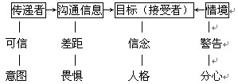
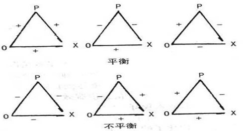

00:00
第二单元 态度转变
个体形成一定态度后，由于接受新的信息或意见而发生变化，这个过程叫态度转变。态度转变就是说服的过程。
一、态度转变模型
美国学者霍夫兰德等人（C.Hovland，1959）提出了一个态度转变的模型：

从这一模型可以看出，发生在接受者身上的态度转变，要涉及四个方面的要素。
二、态度转变的影响因素
（一）传递者方面的影响因素
1.传递者的威信
2.传递者的立场
3.说服的意图
4.说服者的吸引力
08:31
（二）沟通信息方面的影响因素
1.信息差异
任何态度转变都是在沟通信息与接受者原有态度存在差异的情况下发生的。研究表明，对于威信高的传递者，这种差异较大时，引发的态度转变量最大；对于威信低的传递者，这种差异适中，引发的态度转变量最大。
2.畏惧
信息如果唤起人们的畏惧情绪，一般来说会有利于说服。但畏惧与态度转变的关系不是正的线性关系。中等强度的畏惧信息能达到较好的说服效果。
3.信息倾向性
研究发现，对一般公众，单一倾向的信息说服效果较好；对文化水平高的信息接受者，提供正反两方面的信息，说服效果较好。
4.信息的提供方式
信息提供的方式、渠道，也影响说服的效果。一般说，口头传递比书面途径效果好，面对面的沟通比通过大众传媒沟通效果好。
（三）接受者方面的影响因素
1.原有态度与信念的特性
已经内化了的态度作为接受者信念和态度体系的一部分，难于转变；已成为既定事实的态度，即被说服者根据直接经验形成的态度不易转变。与个体的需要密切关联的态度不易转变。
11:57
2.人格因素
依赖性较强的接受者信服权威，比较容易接受说服；自尊水平高、自我评价较高的接受者不易转变态度。高社会赞许动机的接受者易受他人及公众影响，易于接受说服。
3.个体的心理倾向
在面临转变态度的压力时，个体的逆反心理、心理惯性，保留面子等心理倾向会使其拒绝他人的说服，从而影响态度转变。人们通常利用一些自我防卫的策略来减少说服信息对自己的影响，比如笼统拒绝，贬损来源，歪曲信息，论点辩驳等。
（四）情境
态度转变是在一定的背景下进行的，一些情境因素会影响态度转变。
1.预先警告
预先警告有双重作用。如果接受者原有态度不够坚定，对态度对象的卷入程度低，预先警告可促使态度转变。如果态度与接受者的重要利益有关，那么预先警告往往使其抵制态度转变。
2.分心
分心即注意分散。分心的影响也是复杂的，如果分心使接受者分散了对沟通信息的注意，将会减弱接受者对说服者的防御和阻扰，从而促进态度转变；如果分心干扰了说服过程本身，使接受者不能获得沟通信息，则会削弱说服效果。
3.重复
沟通信息重复频率与说服效果呈倒U型曲线关系。中等频率的重复，效果较好。重复频率过低或过高，说服的效果均不好。
14:45
三、态度转变理论
（一）海德（F.Heider，1958）的平衡理论
海德认为，在人们的态度系统中存在某些情感因素之间或评价因素之间趋于一致的压力，如果出现不平衡，则倾向于朝平衡转化。人们在转变态度时，往往遵循“费力最小原则”，即个体尽可能少地转变情感因素而维持态度平衡。
海德的 P-0-X 模型：

图中三角形的3个顶点分别代表个体（P）、他人（O）以及另一个对象（X）。X可能是一个人或者一个事物。三角形的三个边表示P、O、X三者之间的关系，它有两种形式，肯定关系和否定关系，分别以“+”、“-”号表示。海德指出，“如果三种关系从各方面看都是肯定的，或两种是否定的，一种是肯定的，则存在平衡状态”。反之，则存在不平衡状态。
在P-O-X模型中，P-O之间的关系最重要。P-O联系为肯定时的平衡为强平衡，不平衡为强不平衡。而P-O联系为否定时，平衡为弱平衡，不平衡为弱不平衡。
21:51
（二）认知失调论
费斯廷格（L.Festinger，1957）认为，认知失调给个体造成心理压力，使之处于不愉快的紧张状态。此时，个体就会产生消除失调、缓解紧张的动机，通过改变态度的某些认知成分，达到认知协调的平衡状态。
费斯廷格认为，认知失调可能有4种原因：
逻辑的矛盾、文化价值冲突、观念的矛盾、新旧经验相悖。
消除、减少认知失调的途径：
1.改变或否定失调的认知因素的一方，使两方面的认知因素协调。
2.引入或增加新的认知因素，以改变原有的不协调关系。
3.降低失调的认知因素双方的强度。
（三）社会交换论
这种理论从个体对得失权衡与比较后，产生的趋向与回避动机的角度解释态度的形成与转变。它认为决定个体采取何种态度以及转变态度的关键是诱因的强度。态度持有者不是被动接受环境的影响，而是主动对诱因进行周密的计算。态度是肯定因素（得）与否定因素（失）的代数和。个体选择何种态度取决于这种态度能使其获得什么，失去什么，总收益如何。但是个体并非永远是理智计算的决策者，而且个体对这种内部的计算过程也未必意识得到。
逆反心理
逆反心理指个体用相反的态度与行为来对外界的劝导做出反应的现象。逆反心理是一种心理抗拒反应，是个体适应环境的一种正常的心理机能。典型的逆反心理有三种：